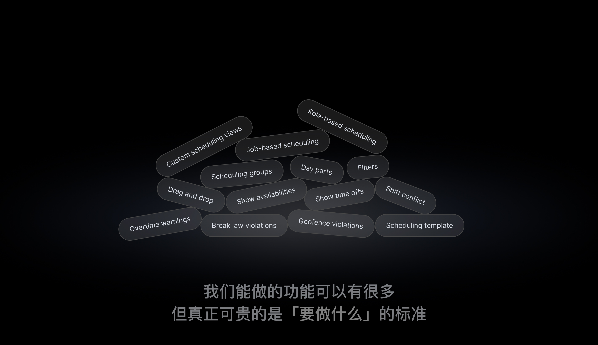
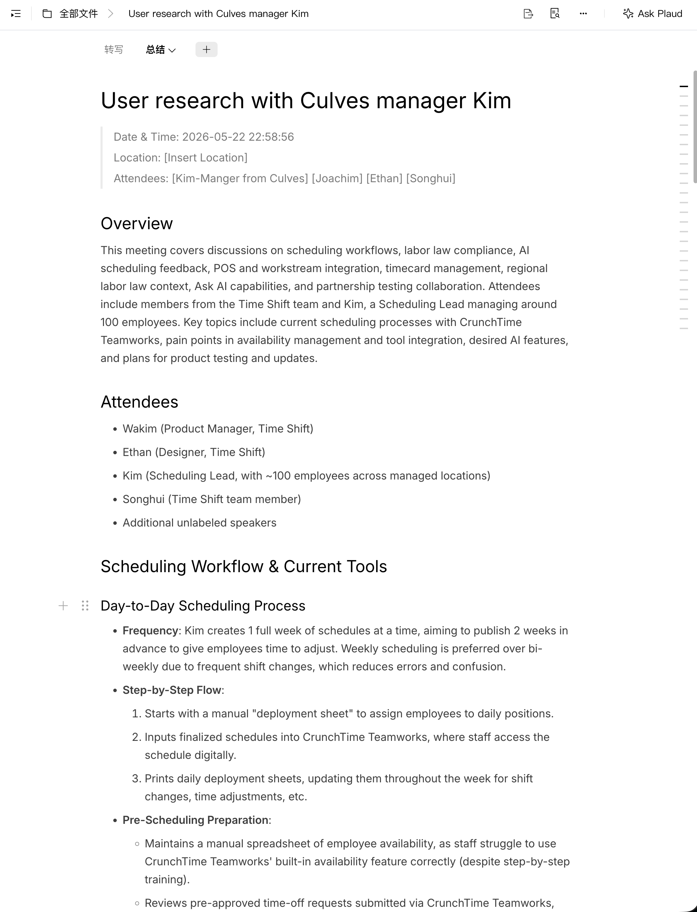
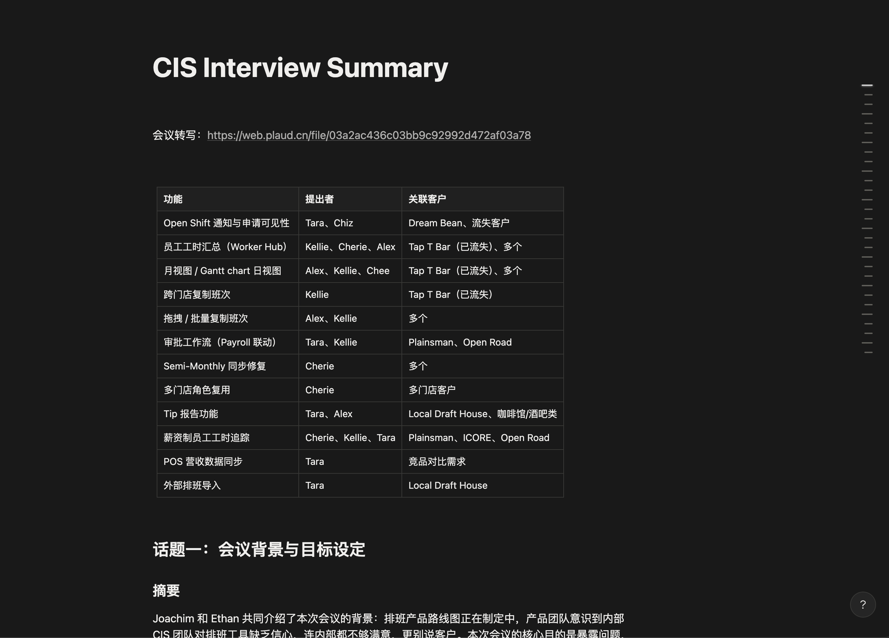
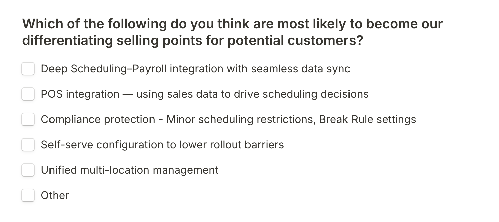
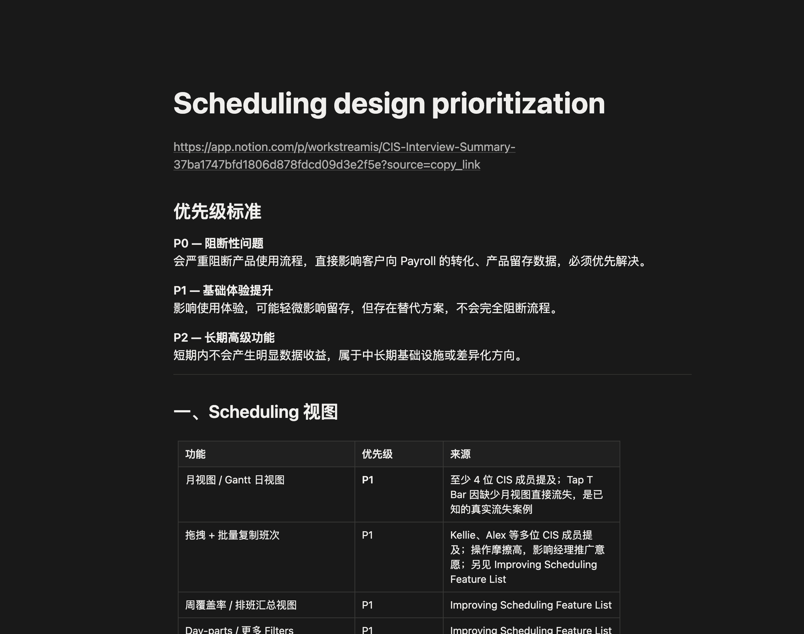
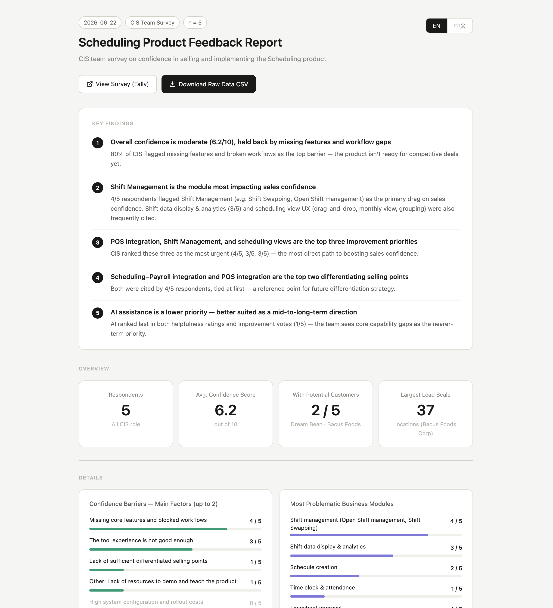
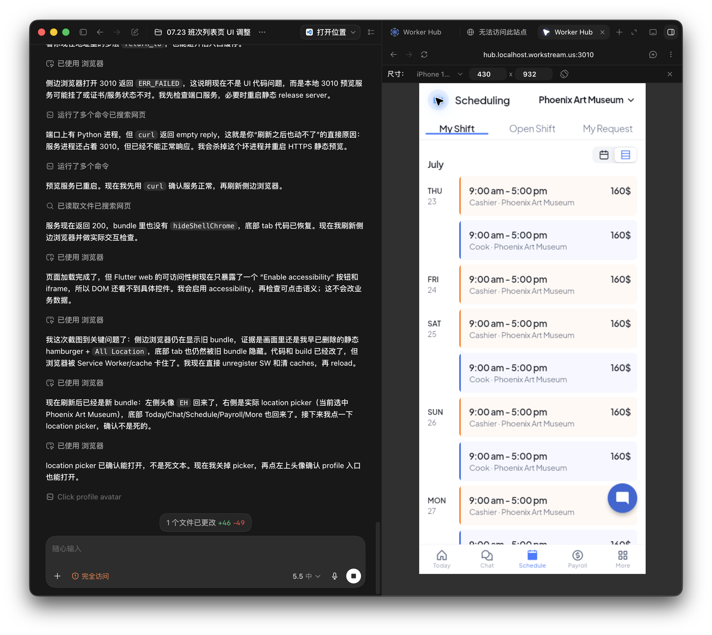
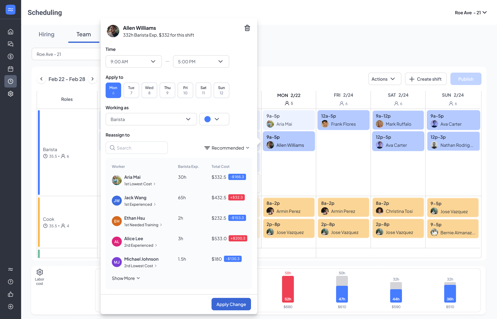
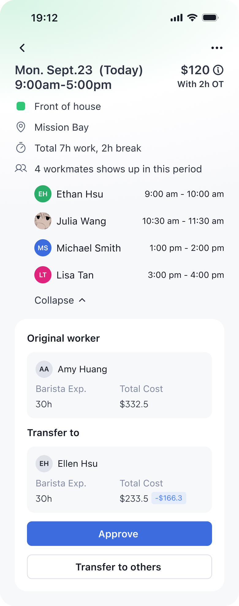
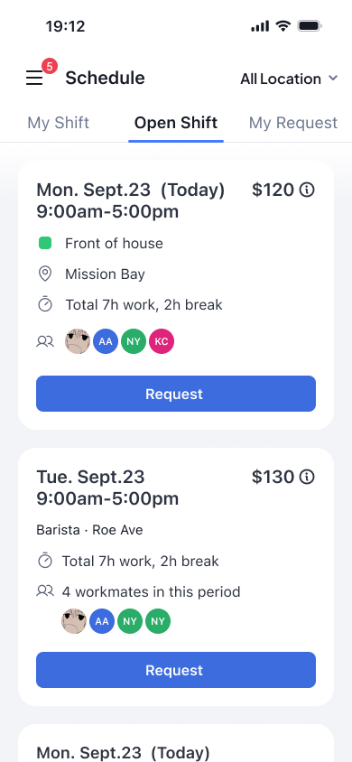

界面之外在混乱中构建产品共识
AI 时代，真正稀缺的是对方向的审美
过去几个月设计师在 Time & Scheduling 上推动了几件事情
识别关键卡点
定位产品重新进入市场的切入点
验证产品方向
通过访谈、假设、数据和 MVP 敏捷迭代
构思长期愿景
一个贴近真实管理生态的排班系统
01
识别关键卡点
定位产品重新进入市场的切入点
客户
基础体验不足流失到 7shifts、Homebase
销售和 CIS
质疑产品功能缺乏销售和推广信心
EPD
有大量功能想法缺少判断依据

我们能做的功能可以有很多但真正可贵的是「要做什么」的标准
从访谈客户入手重建一手认知
访谈 Culvers 的 Manager Kim，避免历史经验误判。

你每次是怎么排班的？
把员工安排到某个班次时一般会考虑什么？
哪些环节最消耗时间和精力？
重建产品能力从恢复销售信心开始
销售团队是产品推广的第一环节，也是产品重新进入市场的起点。
02
验证产品方向
通过访谈、假设、数据和 MVP 敏捷迭代
定性访谈收集销售和推广痛点
与销售团队和 CIS 共创，收集影响推广信心的核心痛点

假设方向，预估优先级
相比竞品，哪些方向是我们的排班工具有差异化的卖点要实现这些目标，哪些才是当下最亟需被解决的问题


定量问卷分析校准方向
向销售团队和 CIS 发放问卷校准假设，问卷结果基本吻合预判。
查看调研报告
收敛方向
POS Integration
接入更多平台，导入经营数据
支撑更完整的排班判断
Shift Management
补齐换班、开放班次和审批
等关键流程。
Scheduling Views
优化视图展示、关键数据看板、分组和批量操作体验。
Vibe Coding 敏捷迭代 MVP
独立代码分支构建 MVP，敏捷验证。

03
构思长期愿景
一个贴近真实管理生态的排班系统
我们不仅设计流程我们还是管理生态的搬运工
排班工具不只是把人放进日程里而是让产品更逼近真实门店里的人际关系、成本考量与管理习惯。把隐匿的人性洞察和难以言表的需求以恰到好处的方式呈现。
KimCulves’ Manager
When I'm doing the schedule, I know if someone's been trained on a position and if it's something they're really good at, so I try to put my aces in their places. And I'm also watching my labor cost, we try to stay under 24 percent, so if I need to cut someone's hours, I usually start with whoever's costing me the most.
更贴近管理习惯的换班员工列表
按照 Lowest cost, Most Experienced, Most Needed Training 等维度罗列换班员工
展示对应的职位工时、整体劳务开销对比

KimCulves’ Manager
I also look at who they're working with — whether they get along with the people around them, or if they clash with someone I've scheduled them with, or if they're such good friends that they end up chatting instead of paying attention to our guests.
将人际关系尺度纳入换班流程
Manager 处理换班时
可查看该时段内会一起工作的员工
Employee 申请 Open shift 时
可查看该时段内会一起工作的员工


🦾